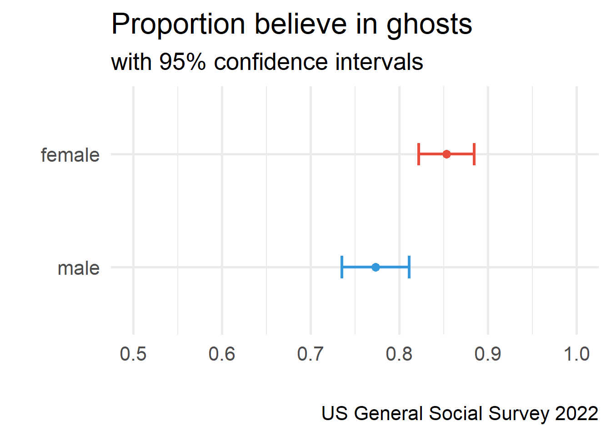
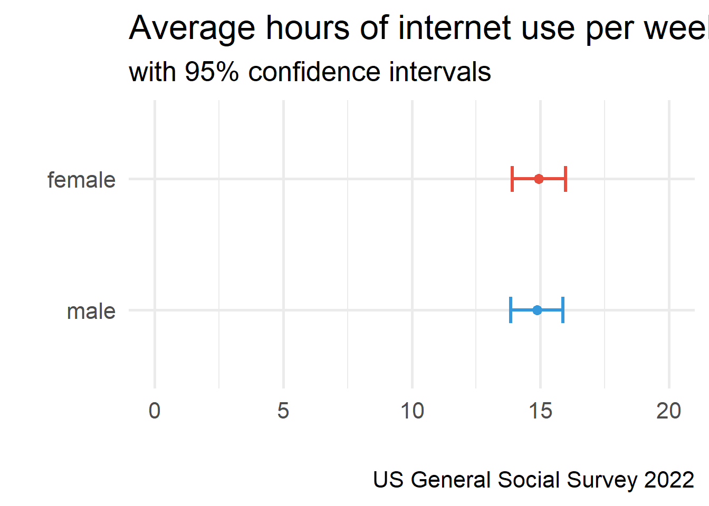

[conflicted] Will prefer haven::is.labelled over any other package.
[conflicted] Will prefer dplyr::filter over any other package.
[conflicted] Will prefer dplyr::summarise over any other package.Statistical Tests I
Agenda
- Confidence Intervals
- Hypothesis Testing
- missing data?
- outliers
- dates?
- lists
- forcats (reorder factor levels)
Learning objectives
By the end of the lecture, you will be able to …
- Use R to calculate confidence intervals for means and proportions
- Use R to conduct one and two sample t-tests
Code-along 05
Download and open code-along-05.qmd
Load your data
# Get the data from the 2022 survey
gss22 <- gss_get_yr(2022)Variables
wwwhrNot counting e-mail, about how many minutes or hours per week do you use the Web?
postlifeDo you believe there is a life after death?
childsHow many children have you ever had?sexRespondent’s sex
Confidence Intervals


summarise() with equation
gss22 |>
filter(!is.na(wwwhr)) |>
summarise(
n = n(),
mean_wwwhr = mean(wwwhr),
sd_wwwhr = sd(wwwhr),
se_wwwhr = sd_wwwhr / sqrt(n),
ci_lower = mean_wwwhr - (1.96 * se_wwwhr),
ci_upper = mean_wwwhr + (1.96 * se_wwwhr)
)# A tibble: 1 × 6
n mean_wwwhr sd_wwwhr se_wwwhr ci_lower ci_upper
<int> <dbl> <dbl> <dbl> <dbl> <dbl>
1 2616 14.9 18.9 0.370 14.2 15.6. . .
What can we infer about the population mean based on this confidence interval?
CIs & percision
95% confidence intervals
wwwhr_ci# A tibble: 1 × 5
n mean_wwwhr sd_wwwhr lowCI_wwwhr hiCI_wwwhr
<int> <dbl> <dbl> <dbl> <dbl>
1 2616 14.9 18.9 14.2 15.699% confidence intervals
wwwhr_ci99# A tibble: 1 × 5
n mean_wwwhr sd_wwwhr lowCI_wwwhr hiCI_wwwhr
<int> <dbl> <dbl> <dbl> <dbl>
1 2616 14.9 18.9 13.9 15.9. . .
How does a 95% confidence interval differ from a 99% confidence interval in terms of width and certainty?
CIs (wrong) with proportions
gss22 |>
filter(!is.na(postlife)) |>
summarise(
n = n(),
mean_ghosts = mean(postlife),
sd_ghosts = sd(postlife),
lowCI_ghosts = CI(postlife, ci = 0.99)['lower'],
hiCI_ghosts = CI(postlife, ci = 0.99)['upper']
)# A tibble: 1 × 5
n mean_ghosts sd_ghosts lowCI_ghosts hiCI_ghosts
<int> <dbl> <dbl> <dbl> <dbl>
1 1579 1.19 0.390 1.16 1.21. . .
This doesn’t work because the values aren’t coded 0 and 1.
CIs (correct) with proportions
# Use logic to recode (yes: 1 = 1; no: 2 = 0)
gss22$ghosts <- ifelse(gss22$postlife == 1, 1, 0)
gss22 |>
filter(!is.na(ghosts)) |>
summarise(
n = n(),
mean_ghosts = mean(ghosts),
sd_ghosts = sd(ghosts),
lowCI_ghosts = CI(ghosts, ci = 0.99)['lower'],
hiCI_ghosts = CI(ghosts, ci = 0.99)['upper']
)# A tibble: 1 × 5
n mean_ghosts sd_ghosts lowCI_ghosts hiCI_ghosts
<int> <dbl> <dbl> <dbl> <dbl>
1 1579 0.813 0.390 0.788 0.838Comparing CIs
gss22$sex <- zap_missing(gss22$sex)
gss22$sex <- as_factor(gss22$sex)
gss22$sex <- droplevels(gss22$sex)
df_ghosts <- gss22 |>
group_by(sex) |>
drop_na(sex, ghosts) |>
summarise(
n = n(),
mean = mean(ghosts),
sd = sd(ghosts),
lower = CI(ghosts, ci = 0.95)['lower'],
upper = CI(ghosts, ci = 0.95)['upper']
)df_ghosts# A tibble: 2 × 6
sex n mean sd lower upper
<fct> <int> <dbl> <dbl> <dbl> <dbl>
1 male 744 0.755 0.430 0.724 0.786
2 female 831 0.864 0.343 0.841 0.887Warning: Using `size` aesthetic for lines was deprecated in ggplot2 3.4.0.
ℹ Please use `linewidth` instead.
Comparing CIs
df_wwwhr# A tibble: 2 × 6
sex n mean sd lower upper
<fct> <int> <dbl> <dbl> <dbl> <dbl>
1 male 1236 14.9 18.3 13.8 15.9
2 female 1376 14.9 19.5 13.9 16.0
Hypothesis Testing
t.test()
Performs one and two sample t-tests. To use this function, we’ll need to specify a few things:
- variable of interest
- mu (H0): a number indicating the true value of the mean
- alternative hypothesis (H1): “two.sided”, “greater”, or “less”
t.test() in action
In your family sociology course you learned that fertility rates have been dropping.
You used to think that people had 2 children, on average. But, now you suspect that people are having fewer than 2 children.
. . .
How do you test your hypothesis?
Which of these equations represents your research hypothesis?
- H1: µ ≠ 2
- H1: µ = 2
- H1: µ < 2
- H1: µ > 2
Which of these equations represents your null hypothesis?
- H0: µ ≠ 2
- H0: µ = 2
- H0: µ < 2
- H0: µ > 2
Review: Summary Statistics
gss22 |>
filter(!is.na(childs)) |>
summarise(
n = n(),
mean = mean(childs),
median = median(childs),
sd = sd(childs))# A tibble: 1 × 4
n mean median sd
<int> <dbl> <dbl> <dbl>
1 4136 1.74 2 1.69. . .
Is the difference between our sample mean and 2 statistically significant or could we have gotten this mean simply by chance (sample variation)?
Review: CIs
gss22 |>
filter(!is.na(childs)) |>
summarise(
n = n(),
mean = mean(childs),
median = median(childs),
sd = sd(childs),
se = sd / sqrt(n),
lower = CI(childs, ci = 0.99)['lower'],
upper = CI(childs, ci = 0.99)['upper']
)# A tibble: 1 × 7
n mean median sd se lower upper
<int> <dbl> <dbl> <dbl> <dbl> <dbl> <dbl>
1 4136 1.74 2 1.69 0.0262 1.67 1.80. . .
Does the confidence interval overlap with 2? What does that tell you?
One sample t.test() for means
t.test(gss22$childs)
One Sample t-test
data: gss22$childs
t = 66.217, df = 4135, p-value < 2.2e-16
alternative hypothesis: true mean is not equal to 0
95 percent confidence interval:
1.68364 1.78638
sample estimates:
mean of x
1.73501 . . .
H0 = 0 by default
One sample t.test() for means
t.test(gss22$childs, mu=2, alternative="less") # Ho: mu=2
One Sample t-test
data: gss22$childs
t = -10.113, df = 4135, p-value < 2.2e-16
alternative hypothesis: true mean is less than 2
95 percent confidence interval:
-Inf 1.778118
sample estimates:
mean of x
1.73501 . . .
H0 = 2; one-tail test
Assuming an α level of .05, should you reject the null hypothesis?
- No, because the 𝛼 level of .01 is greater than the p-value (< .000).
- No, because the p-value (< .000) is less than the 𝛼 level of .01.
- Yes, because the p-value (< .000) is less than the 𝛼 level of .01.
Which of these statements best summarizes your conclusion?
- Our evidence proves that people have fewer than two children, on average.
- People, on average, have two children.
- On average, the number of children people have is statistically significantly lower than two.
two sample t.test() in action
Are the proportions of men and women who believe in ghosts statistically significantly different?
. . .
t.test(gss22$ghosts ~ gss22$sex, alternative = "two.sided")
Welch Two Sample t-test
data: gss22$ghosts by gss22$sex
t = -5.4996, df = 1418.2, p-value = 4.51e-08
alternative hypothesis: true difference in means between group male and group female is not equal to 0
95 percent confidence interval:
-0.14739470 -0.06989112
sample estimates:
mean in group male mean in group female
0.7553763 0.8640193 Assuming an α level of .05, what do you conclude?
- There is no statistically significant difference between men and women in belief in ghosts.
- Men are significantly more likely than women to believe in ghosts (p < .05).
- Women are significantly more likely than men to believe in ghosts (p < .05).
Think Like a Statistician
Think Like a Statistician
Do women have more years of education (educ) than men, on average?
. . .
Are the proportions of men & women who support abortion for any reason (abany) statistically different?
. . .
Do fewer men than women support gun laws (gunlaw)?
Think Like a Statistician
Welch Two Sample t-test
data: gss22$educ by gss22$sex
t = -0.38076, df = 4035.7, p-value = 0.3517
alternative hypothesis: true difference in means between group male and group female is less than 0
95 percent confidence interval:
-Inf 0.1144853
sample estimates:
mean in group male mean in group female
14.14338 14.17786
Welch Two Sample t-test
data: gss22$abany by gss22$sex
t = -1.0701, df = 1317.7, p-value = 0.2848
alternative hypothesis: true difference in means between group male and group female is not equal to 0
95 percent confidence interval:
-0.08169512 0.02402811
sample estimates:
mean in group male mean in group female
0.5786164 0.6074499
Welch Two Sample t-test
data: gss22$gunlaw by gss22$sex
t = -8.9698, df = 2476.6, p-value < 2.2e-16
alternative hypothesis: true difference in means between group male and group female is not equal to 0
95 percent confidence interval:
-0.1872801 -0.1200856
sample estimates:
mean in group male mean in group female
0.6450593 0.7987421